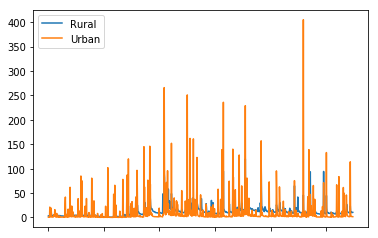
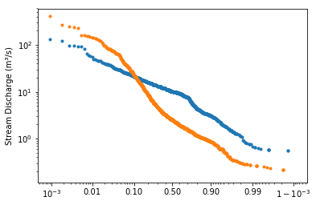

Comparing Urban and Rural Streams¶
In this notebook we’ll compare the hydrology of two streams in the Baltimore area: * Grave Run, a rural stream with only 0.3% impervious surfaces, and * Dead Run, an urban stream that is 39% impervious surfaces.
These two watersheds are similar in size, topography, and geology. They also have very emo names.
[ ]:
# For future notice if hydrofunctions is not available on HydroShare:
# Use these commands to install a pip package in the current Jupyter kernel (should be Python 3)
#import sys
#!{sys.executable} -m pip install hydrofunctions
[1]:
# Start with the usual.
import numpy as np
import pandas as pd
import hydrofunctions as hf
print(hf.__version__)
import matplotlib as plt
%matplotlib inline
0.1.7
[2]:
# request data for our two sites for a three-year period.
sites = ['01581830', '01589330']
request = hf.NWIS(sites, start_date='2002-01-01', end_date='2005-01-01').get_data()
request.ok # Verify that the data request went fine.
[2]:
True
[3]:
# We'll store our data in a dataframe named 'Q'
Q = request.df()
Q.head() # Print the first five rows to verify.
[3]:
| USGS:01581830:00060:00003 | USGS:01581830:00060:00003_qualifiers | USGS:01589330:00060:00003 | USGS:01589330:00060:00003_qualifiers | |
|---|---|---|---|---|
| 2002-01-01 | 3.20 | A e | 0.60 | A |
| 2002-01-02 | 3.20 | A e | 0.61 | A |
| 2002-01-03 | 3.30 | A e | 0.60 | A |
| 2002-01-04 | 3.20 | A e | 0.64 | A |
| 2002-01-05 | 4.18 | A | 0.60 | A |
[4]:
# What are the names for our two sites?
request.siteName
[4]:
['GRAVE RUN NEAR BECKLEYSVILLE, MD', 'DEAD RUN AT FRANKLINTOWN, MD']
[5]:
# Modify our dataframe so that it only includes the columns with discharge in them.
Q = Q.iloc[:,[0,2]]
# What are the column names?
Q.columns
[5]:
Index(['USGS:01581830:00060:00003', 'USGS:01589330:00060:00003'], dtype='object')
[6]:
# Rename the columns to 'Urban' and 'Rural' so we remember which is which!
Q.rename(index=str, columns={"USGS:01581830:00060:00003": "Rural", "USGS:01589330:00060:00003": "Urban"}, inplace=True)
Q.head() # List the first five rows.
[6]:
| Rural | Urban | |
|---|---|---|
| 2002-01-01 00:00:00 | 3.20 | 0.60 |
| 2002-01-02 00:00:00 | 3.20 | 0.61 |
| 2002-01-03 00:00:00 | 3.30 | 0.60 |
| 2002-01-04 00:00:00 | 3.20 | 0.64 |
| 2002-01-05 00:00:00 | 4.18 | 0.60 |
[7]:
# Let's plot our data to create a hydrograph. plot() is a method that is built-in to dataframes.
Q.plot()
[7]:
<matplotlib.axes._subplots.AxesSubplot at 0x7f2e74ae9470>

[8]:
# Let's create a flow duration chart for our two sites!
# .flow_duration is a function included in Hydrofunctions. It accepts dataframes as input.
hf.flow_duration(Q)
[8]:
(<matplotlib.figure.Figure at 0x7f2e74aabf60>,
<matplotlib.axes._subplots.AxesSubplot at 0x7f2e74aecbe0>)

[9]:
!ls
data Import_USGS_to_Pandas.ipynb Urban_Rural_Streams.ipynb
help notebooks utilities
hydrofunctions-old test Welcome.ipynb
[12]:
# lets save this content as a new resource in HydroShare
abstract = 'This notebook demonstrates how to use the Python package "hydrofunctions" to download stream discharge data from the NWIS and plot a stream hydrograph and a flow duration chart.'
title = 'Comparing Urban and Rural Streams'
keywords = ['Python', 'flow duration', 'hydrofunctions', 'hydrology']
rtype = 'genericresource'
files = 'Urban_Rural_Streams.ipynb'
# create the new resource
from utilities import hydroshare
hs = hydroshare.hydroshare()
resource_id = hs.createHydroShareResource(abstract,
title,
keywords=keywords,
resource_type=rtype,
content_files=files,
public=True)
Environment file could not be found. Make sure that the JUPYTER_ENV variable is set properly
The hs_utils library requires a secure connection to your HydroShare account.
Please enter your HydroShare username: mroberge@towson.edu
Enter the HydroShare password for user 'mroberge@towson.edu': ········
Successfully established a connection with HydroShare
Resource Created Successfully
Exception in thread Thread-4:
Traceback (most recent call last):
File "/opt/conda/lib/python3.6/threading.py", line 916, in _bootstrap_inner
self.run()
File "/opt/conda/lib/python3.6/threading.py", line 864, in run
self._target(*self._args, **self._kwargs)
File "/home/jovyan/work/notebooks/utilities/hydroshare/threads.py", line 23, in f
res = self.func(*args, **kwargs)
File "/opt/conda/lib/python3.6/site-packages/hs_restclient/__init__.py", line 738, in createResource
close_fd = self._prepareFileForUpload(params, resource_file, resource_filename)
File "/opt/conda/lib/python3.6/site-packages/hs_restclient/__init__.py", line 170, in _prepareFileForUpload
raise HydroShareArgumentException("{0} is not a file or is not readable.".format(resource_file))
hs_restclient.exceptions.HydroShareArgumentException: U is not a file or is not readable.
Exception in thread Thread-5:
Traceback (most recent call last):
File "/opt/conda/lib/python3.6/threading.py", line 916, in _bootstrap_inner
self.run()
File "/opt/conda/lib/python3.6/threading.py", line 864, in run
self._target(*self._args, **self._kwargs)
File "/home/jovyan/work/notebooks/utilities/hydroshare/threads.py", line 23, in f
res = self.func(*args, **kwargs)
File "/home/jovyan/work/notebooks/utilities/hydroshare/hydroshare.py", line 68, in _addContentToExistingResource
self.hs.addResourceFile(resid, f)
File "/opt/conda/lib/python3.6/site-packages/hs_restclient/__init__.py", line 833, in addResourceFile
close_fd = self._prepareFileForUpload(params, resource_file, resource_filename)
File "/opt/conda/lib/python3.6/site-packages/hs_restclient/__init__.py", line 170, in _prepareFileForUpload
raise HydroShareArgumentException("{0} is not a file or is not readable.".format(resource_file))
hs_restclient.exceptions.HydroShareArgumentException: r is not a file or is not readable.
Successfully Added Content Files
Resource id: None